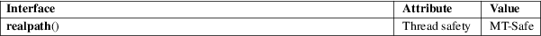

realpath − return the canonicalized absolute pathname
Standard C library (libc, −lc)
#include
<limits.h>
#include <stdlib.h>
char
*realpath(const char *restrict path,
char *restrict resolved_path);
Feature Test Macro Requirements for glibc (see feature_test_macros(7)):
realpath():
_XOPEN_SOURCE >= 500
|| /* glibc >= 2.19: */ _DEFAULT_SOURCE
|| /* glibc <= 2.19: */ _BSD_SOURCE
realpath() expands all symbolic links and resolves references to /./, /../ and extra '/' characters in the null-terminated string named by path to produce a canonicalized absolute pathname. The resulting pathname is stored as a null-terminated string, up to a maximum of PATH_MAX bytes, in the buffer pointed to by resolved_path. The resulting path will have no symbolic link, /./ or /../ components.
If resolved_path is specified as NULL, then realpath() uses malloc(3) to allocate a buffer of up to PATH_MAX bytes to hold the resolved pathname, and returns a pointer to this buffer. The caller should deallocate this buffer using free(3).
If there is no error, realpath() returns a pointer to the resolved_path.
Otherwise, it returns NULL, the contents of the array resolved_path are undefined, and errno is set to indicate the error.
|
EACCES |
Read or search permission was denied for a component of the path prefix. | ||
|
EINVAL |
path is NULL. (Before glibc 2.3, this error is also returned if resolved_path is NULL.) | ||
|
EIO |
An I/O error occurred while reading from the filesystem. | ||
|
ELOOP |
Too many symbolic links were encountered in translating the pathname. |
ENAMETOOLONG
A component of a pathname exceeded NAME_MAX characters, or an entire pathname exceeded PATH_MAX characters.
|
ENOENT |
The named file does not exist. |
|||
|
ENOMEM |
Out of memory. |
ENOTDIR
A component of the path prefix is not a directory.
For an explanation of the terms used in this section, see attributes(7).

GNU
extensions
If the call fails with either EACCES or ENOENT
and resolved_path is not NULL, then the prefix of
path that is not readable or does not exist is
returned in resolved_path.
POSIX.1-2008.
4.4BSD, POSIX.1-2001, Solaris.
POSIX.1-2001 says that the behavior if resolved_path is NULL is implementation-defined. POSIX.1-2008 specifies the behavior described in this page.
In 4.4BSD and Solaris, the limit on the pathname length is MAXPATHLEN (found in <sys/param.h>). SUSv2 prescribes PATH_MAX and NAME_MAX, as found in <limits.h> or provided by the pathconf(3) function. A typical source fragment would be
#ifdef PATH_MAX
path_max = PATH_MAX;
#else
path_max = pathconf(path, _PC_PATH_MAX);
if (path_max <= 0)
path_max = 4096;
#endif
(But see the BUGS section.)
The POSIX.1-2001 standard version of this function is broken by design, since it is impossible to determine a suitable size for the output buffer, resolved_path. According to POSIX.1-2001 a buffer of size PATH_MAX suffices, but PATH_MAX need not be a defined constant, and may have to be obtained using pathconf(3). And asking pathconf(3) does not really help, since, on the one hand POSIX warns that the result of pathconf(3) may be huge and unsuitable for mallocing memory, and on the other hand pathconf(3) may return −1 to signify that PATH_MAX is not bounded. The resolved_path == NULL feature, not standardized in POSIX.1-2001, but standardized in POSIX.1-2008, allows this design problem to be avoided.
realpath(1), readlink(2), canonicalize_file_name(3), getcwd(3), pathconf(3), sysconf(3)